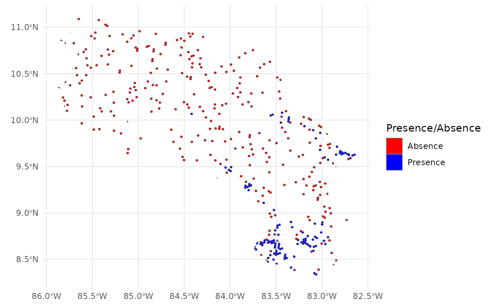
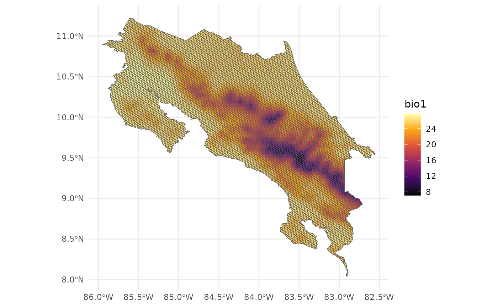
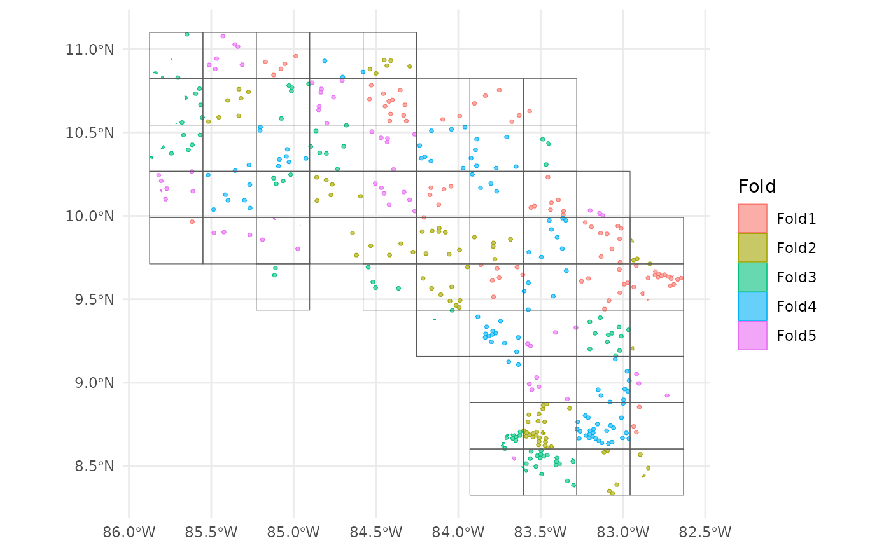
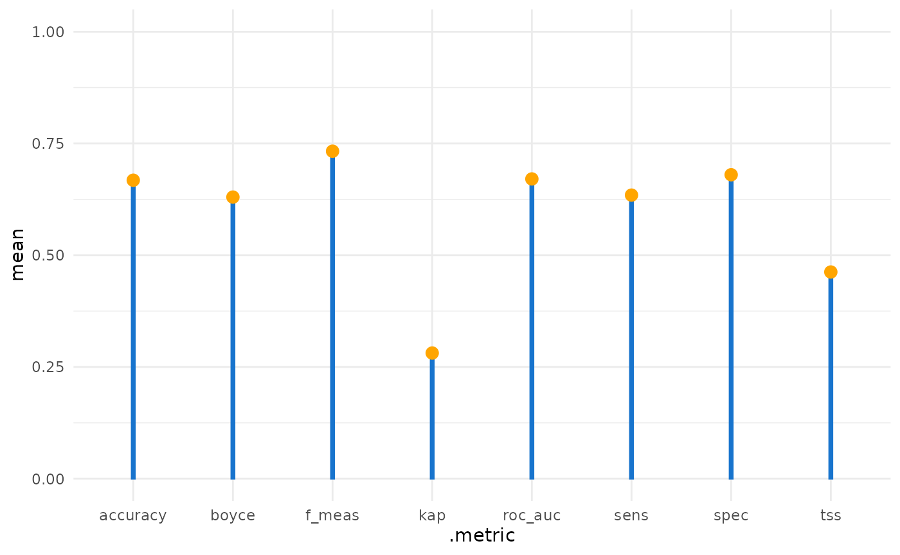
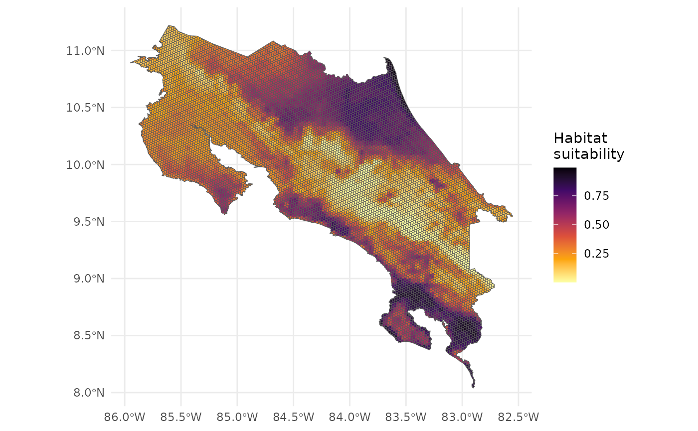
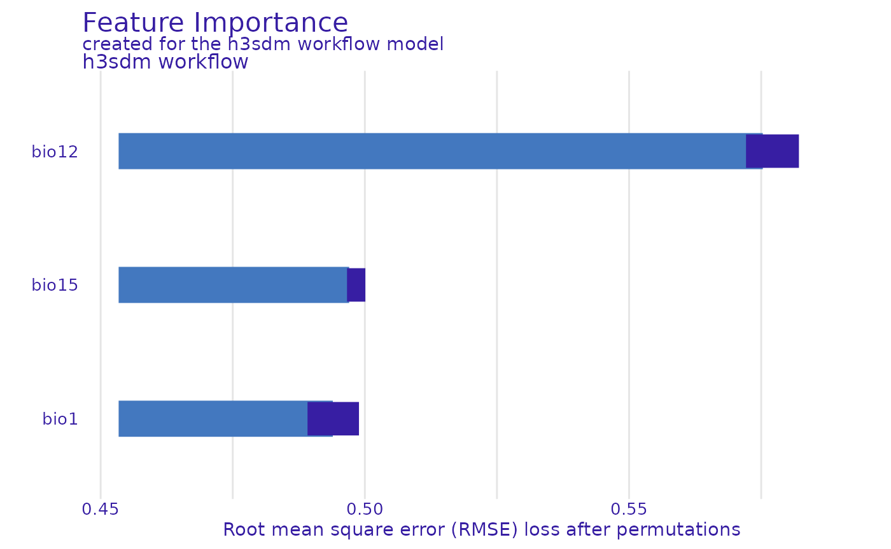
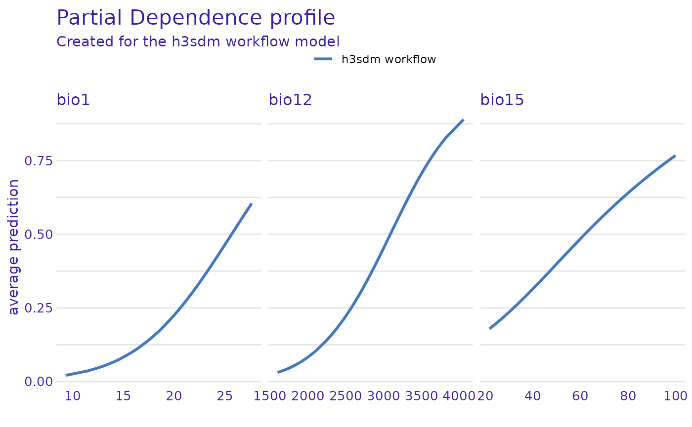
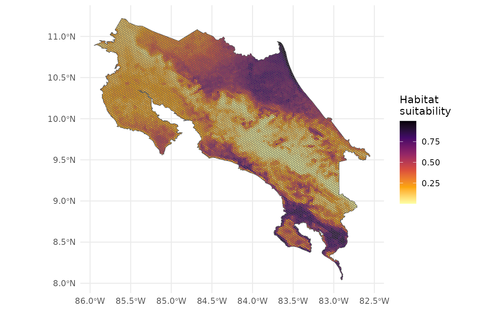

Introduction
This vignette demonstrates a complete workflow for species
distribution modeling (SDM) for a single species using
h3sdm. We cover data preparation, model fitting, spatial
cross-validation, prediction, and feature importance.
2. Load Environmental Predictors
bio <- terra::rast(system.file("extdata", "bioclim_current.tif", package = "h3sdm"))
names(bio) <- gsub(".*bio_", "bio", names(bio))3. Species Occurrence Data
The package includes a precomputed presence/pseudo-absence dataset for Silverstoneia flotator at H3 resolution 7.
data(records)
head(records)
#> Simple feature collection with 6 features and 2 fields
#> Geometry type: MULTIPOLYGON
#> Dimension: XY
#> Bounding box: xmin: -84.06344 ymin: 8.486587 xmax: -82.77295 ymax: 9.643344
#> Geodetic CRS: WGS 84
#> h3_address presence geometry
#> 43 8766b4415ffffff 1 MULTIPOLYGON (((-84.05549 9...
#> 165 87679b636ffffff 1 MULTIPOLYGON (((-82.79149 9...
#> 198 8766b54d3ffffff 1 MULTIPOLYGON (((-83.18895 8...
#> 427 87679b78effffff 1 MULTIPOLYGON (((-82.85228 9...
#> 796 8766b0135ffffff 1 MULTIPOLYGON (((-83.71366 8...
#> 893 8766b014cffffff 1 MULTIPOLYGON (((-83.53362 8...
table(records$presence)
#>
#> 0 1
#> 300 123
ggplot() +
theme_minimal() +
geom_sf(data = records, aes(fill = presence)) +
scale_fill_manual(
name = "Presence/Absence",
values = c("red", "blue"),
labels = c("Absence", "Presence")
)
4. Prepare Predictors
h7 <- h3sdm_get_grid(cr, res = 7)
bio_predictors <- h3sdm_extract_num(bio, h7)
#> | | | 0% | | | 1% | |= | 1% | |= | 2% | |== | 2% | |== | 3% | |== | 4% | |=== | 4% | |=== | 5% | |=== | 6% | |==== | 6% | |==== | 7% | |===== | 7% | |===== | 8% | |===== | 9% | |====== | 9% | |====== | 10% | |====== | 11% | |======= | 11% | |======= | 12% | |======== | 12% | |======== | 13% | |======== | 14% | |========= | 14% | |========= | 15% | |========= | 16% | |========== | 16% | |========== | 17% | |=========== | 17% | |=========== | 18% | |=========== | 19% | |============ | 19% | |============ | 20% | |============= | 20% | |============= | 21% | |============= | 22% | |============== | 22% | |============== | 23% | |============== | 24% | |=============== | 24% | |=============== | 25% | |================ | 25% | |================ | 26% | |================ | 27% | |================= | 27% | |================= | 28% | |================= | 29% | |================== | 29% | |================== | 30% | |=================== | 30% | |=================== | 31% | |=================== | 32% | |==================== | 32% | |==================== | 33% | |==================== | 34% | |===================== | 34% | |===================== | 35% | |====================== | 35% | |====================== | 36% | |====================== | 37% | |======================= | 37% | |======================= | 38% | |======================= | 39% | |======================== | 39% | |======================== | 40% | |========================= | 40% | |========================= | 41% | |========================= | 42% | |========================== | 42% | |========================== | 43% | |=========================== | 43% | |=========================== | 44% | |=========================== | 45% | |============================ | 45% | |============================ | 46% | |============================ | 47% | |============================= | 47% | |============================= | 48% | |============================== | 48% | |============================== | 49% | |============================== | 50% | |=============================== | 50% | |=============================== | 51% | |=============================== | 52% | |================================ | 52% | |================================ | 53% | |================================= | 53% | |================================= | 54% | |================================= | 55% | |================================== | 55% | |================================== | 56% | |================================== | 57% | |=================================== | 57% | |=================================== | 58% | |==================================== | 58% | |==================================== | 59% | |==================================== | 60% | |===================================== | 60% | |===================================== | 61% | |====================================== | 61% | |====================================== | 62% | |====================================== | 63% | |======================================= | 63% | |======================================= | 64% | |======================================= | 65% | |======================================== | 65% | |======================================== | 66% | |========================================= | 66% | |========================================= | 67% | |========================================= | 68% | |========================================== | 68% | |========================================== | 69% | |========================================== | 70% | |=========================================== | 70% | |=========================================== | 71% | |============================================ | 71% | |============================================ | 72% | |============================================ | 73% | |============================================= | 73% | |============================================= | 74% | |============================================= | 75% | |============================================== | 75% | |============================================== | 76% | |=============================================== | 76% | |=============================================== | 77% | |=============================================== | 78% | |================================================ | 78% | |================================================ | 79% | |================================================ | 80% | |================================================= | 80% | |================================================= | 81% | |================================================== | 81% | |================================================== | 82% | |================================================== | 83% | |=================================================== | 83% | |=================================================== | 84% | |==================================================== | 84% | |==================================================== | 85% | |==================================================== | 86% | |===================================================== | 86% | |===================================================== | 87% | |===================================================== | 88% | |====================================================== | 88% | |====================================================== | 89% | |======================================================= | 89% | |======================================================= | 90% | |======================================================= | 91% | |======================================================== | 91% | |======================================================== | 92% | |======================================================== | 93% | |========================================================= | 93% | |========================================================= | 94% | |========================================================== | 94% | |========================================================== | 95% | |========================================================== | 96% | |=========================================================== | 96% | |=========================================================== | 97% | |=========================================================== | 98% | |============================================================ | 98% | |============================================================ | 99% | |=============================================================| 99% | |=============================================================| 100%
predictors <- h3sdm_predictors(bio_predictors) |>
dplyr::select(h3_address, bio1, bio12, bio15, geometry)
ggplot() +
theme_minimal() +
geom_sf(data = predictors, aes(fill = bio1)) +
scale_fill_viridis_c(option = "B")
5. Combine Records and Predictors
dat <- h3sdm_data(records, predictors)6. Spatial Cross-Validation
scv <- h3sdm_spatial_cv(dat, v = 5, repeats = 1)
autoplot(scv) + theme_minimal()
7. Define Recipe and Model
receta <- h3sdm_recipe(dat) |>
themis::step_downsample(presence)
modelo <- parsnip::logistic_reg() |>
parsnip::set_engine("glm") |>
parsnip::set_mode("classification")8. Create Workflow
wf <- h3sdm_workflow(modelo, receta)9. Fit the Model
presence_data <- dat |>
dplyr::filter(presence == 1)
f <- h3sdm_fit_model(wf, scv, presence_data)10. Evaluate Model Performance
evaluation_metrics <- h3sdm_eval_metrics(
fitted_model = f$cv_model,
presence_data = presence_data
)
evaluation_metrics
#> # A tibble: 8 × 6
#> .metric .estimator mean std_err conf_low conf_high
#> <chr> <chr> <dbl> <dbl> <dbl> <dbl>
#> 1 accuracy binary 0.668 0.0535 0.563 0.773
#> 2 f_meas binary 0.733 0.0454 0.644 0.822
#> 3 kap binary 0.281 0.127 0.0317 0.531
#> 4 roc_auc binary 0.671 0.0695 0.534 0.807
#> 5 sens binary 0.634 0.0415 0.553 0.716
#> 6 spec binary 0.68 0.118 0.449 0.911
#> 7 tss binary 0.462 NA NA NA
#> 8 boyce binary 0.63 NA NA NA
ggplot(evaluation_metrics, aes(.metric, mean)) +
theme_minimal() +
geom_col(width = 0.03, color = "dodgerblue3", fill = "dodgerblue3") +
geom_point(size = 3, color = "orange") +
ylim(0, 1)
11. Make Predictions
p <- h3sdm_predict(f, predictors)
ggplot() +
theme_minimal() +
geom_sf(data = p, aes(fill = prediction)) +
scale_fill_viridis_c(name = "Habitat\nsuitability", option = "B", direction = -1)
12. Model Interpretation
e <- h3sdm_explain(f$final_model, data = dat)
#> Preparation of a new explainer is initiated
#> -> model label : h3sdm workflow
#> -> data : 423 rows 6 cols
#> -> target variable : 423 values
#> -> predict function : custom_predict
#> -> predicted values : No value for predict function target column. ( default )
#> -> model_info : package Model of class: workflow package unrecognized , ver. Unknown , task regression ( default )
#> -> predicted values : numerical, min = 0.004277484 , mean = 0.425113 , max = 0.9475293
#> -> residual function : difference between y and yhat ( default )
#> -> residuals : numerical, min = -0.9145136 , mean = -0.1343329 , max = 0.8661044
#> A new explainer has been created!
predictors_to_evaluate <- setdiff(names(e$data), c("h3_address", "x", "y", "presence"))
var_imp <- DALEX::model_parts(
explainer = e,
variables = predictors_to_evaluate
)
plot(var_imp)
pdp_glm <- ingredients::partial_dependence(e, variables = c("bio12", "bio1", "bio15"))
plot(pdp_glm)
13. Future Scenario Predictions
bio_future <- terra::rast(system.file("extdata", "bioclim_future.tif", package = "h3sdm"))
names(bio_future) <- c("bio1", "bio12", "bio15")
bio_future_predictors <- h3sdm_extract_num(bio_future, h7)
#> | | | 0% | | | 1% | |= | 1% | |= | 2% | |== | 2% | |== | 3% | |== | 4% | |=== | 4% | |=== | 5% | |=== | 6% | |==== | 6% | |==== | 7% | |===== | 7% | |===== | 8% | |===== | 9% | |====== | 9% | |====== | 10% | |====== | 11% | |======= | 11% | |======= | 12% | |======== | 12% | |======== | 13% | |======== | 14% | |========= | 14% | |========= | 15% | |========= | 16% | |========== | 16% | |========== | 17% | |=========== | 17% | |=========== | 18% | |=========== | 19% | |============ | 19% | |============ | 20% | |============= | 20% | |============= | 21% | |============= | 22% | |============== | 22% | |============== | 23% | |============== | 24% | |=============== | 24% | |=============== | 25% | |================ | 25% | |================ | 26% | |================ | 27% | |================= | 27% | |================= | 28% | |================= | 29% | |================== | 29% | |================== | 30% | |=================== | 30% | |=================== | 31% | |=================== | 32% | |==================== | 32% | |==================== | 33% | |==================== | 34% | |===================== | 34% | |===================== | 35% | |====================== | 35% | |====================== | 36% | |====================== | 37% | |======================= | 37% | |======================= | 38% | |======================= | 39% | |======================== | 39% | |======================== | 40% | |========================= | 40% | |========================= | 41% | |========================= | 42% | |========================== | 42% | |========================== | 43% | |=========================== | 43% | |=========================== | 44% | |=========================== | 45% | |============================ | 45% | |============================ | 46% | |============================ | 47% | |============================= | 47% | |============================= | 48% | |============================== | 48% | |============================== | 49% | |============================== | 50% | |=============================== | 50% | |=============================== | 51% | |=============================== | 52% | |================================ | 52% | |================================ | 53% | |================================= | 53% | |================================= | 54% | |================================= | 55% | |================================== | 55% | |================================== | 56% | |================================== | 57% | |=================================== | 57% | |=================================== | 58% | |==================================== | 58% | |==================================== | 59% | |==================================== | 60% | |===================================== | 60% | |===================================== | 61% | |====================================== | 61% | |====================================== | 62% | |====================================== | 63% | |======================================= | 63% | |======================================= | 64% | |======================================= | 65% | |======================================== | 65% | |======================================== | 66% | |========================================= | 66% | |========================================= | 67% | |========================================= | 68% | |========================================== | 68% | |========================================== | 69% | |========================================== | 70% | |=========================================== | 70% | |=========================================== | 71% | |============================================ | 71% | |============================================ | 72% | |============================================ | 73% | |============================================= | 73% | |============================================= | 74% | |============================================= | 75% | |============================================== | 75% | |============================================== | 76% | |=============================================== | 76% | |=============================================== | 77% | |=============================================== | 78% | |================================================ | 78% | |================================================ | 79% | |================================================ | 80% | |================================================= | 80% | |================================================= | 81% | |================================================== | 81% | |================================================== | 82% | |================================================== | 83% | |=================================================== | 83% | |=================================================== | 84% | |==================================================== | 84% | |==================================================== | 85% | |==================================================== | 86% | |===================================================== | 86% | |===================================================== | 87% | |===================================================== | 88% | |====================================================== | 88% | |====================================================== | 89% | |======================================================= | 89% | |======================================================= | 90% | |======================================================= | 91% | |======================================================== | 91% | |======================================================== | 92% | |======================================================== | 93% | |========================================================= | 93% | |========================================================= | 94% | |========================================================== | 94% | |========================================================== | 95% | |========================================================== | 96% | |=========================================================== | 96% | |=========================================================== | 97% | |=========================================================== | 98% | |============================================================ | 98% | |============================================================ | 99% | |=============================================================| 99% | |=============================================================| 100%
predictors_future <- h3sdm_predictors(bio_future_predictors)
p_future <- h3sdm_predict(f, predictors_future)
ggplot() +
theme_minimal() +
geom_sf(data = p_future, aes(fill = prediction)) +
scale_fill_viridis_c(name = "Habitat\nsuitability", option = "B", direction = -1)